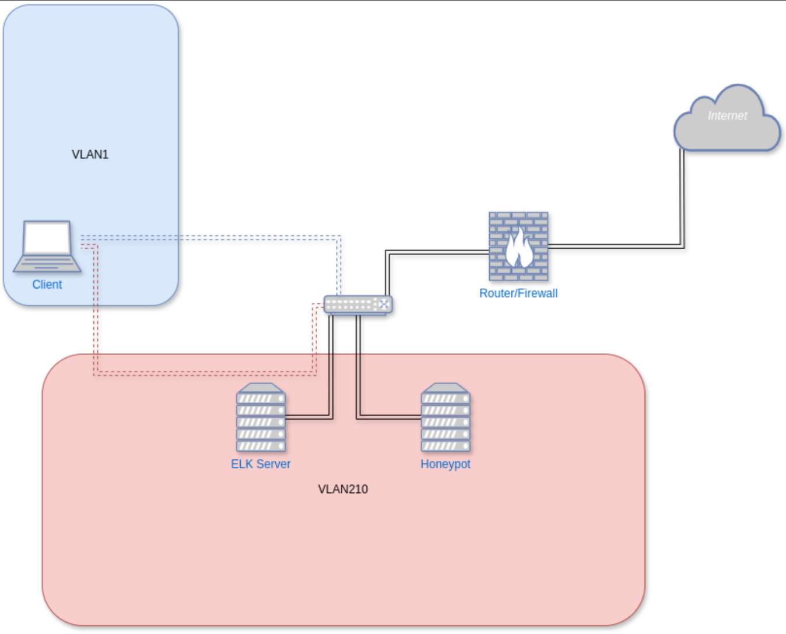
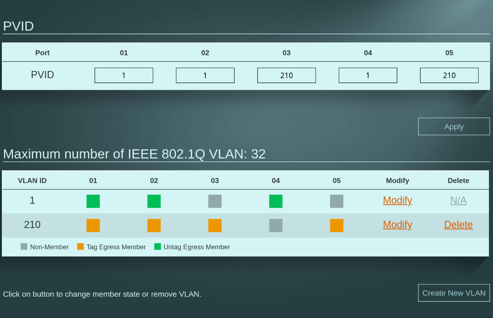

Forensic Wheels
DRAFT Collecting netflow data with pflow(1) and logstash @threathuntingopenbsdvisibility
DRAFT Threathunting IV: Setup ELK Server and ingest data @threathuntingvisibility
DRAFT Testing webhoneypots with ZAP in server mode @threathunting
DONE Threathunting I: Network setup @threathuntinghoneypotvisibility
Introduction
This is a small series I wanted to start, where I write about my small threathunting setup and describe a little what I build and what I am doing with it.
In this part, I will describe the Network setup for my Environment, more about how I build the honeypots and the ELK Server I will describe in the follow up articles about threathunting.
Keep in mind this is for Education and fun, no serious stuff going on here.
Why I Built a Home Lab for Threat Hunting 🕵
The threat landscape is constantly evolving, with new attack vectors, tools, and tactics appearing almost daily.
And to keep my skills current with real-world threats, I built a home lab dedicated to threat hunting. This environment allows me to safely observe attacks and develop detection and defense methods. I deployed web and shell honeypots, and collect real threat data in a controlled setting.
It’s a practical, hands-on way to explore the behavior of adversaries and its a lot of fun!
Network Setup
Topology, Hardware and Tools 🛠

For the hardware setup, I kept things lightweight and affordable by using Raspberry Pi devices and open-source tools. The honeypot is based on the well-known Cowrie SSH honeypot and the honeyhttpd HTTP honeypot . It runs on a Raspberry Pi 4 with 8GB of RAM, hosted inside a Docker 🐳 container. On the honeypot host, Filebeat is running to ingest the Cowrie logs into the ELK stack.
For the ELK stack, I used a Raspberry Pi 5 with 16GB of RAM, running Debian. The ELK services are also containerized using Docker. The stack is based on the DShield-SIEM project, which I customized to better fit my needs. I’ll dive deeper into those modifications and the ELK setup in a follow-up article.
The network topology is straightforward but deliberately segmented. The router is connected to a managed switch, which is responsible for handling VLAN separation. Both the honeypot and the ELK server are connected to this switch and are placed in an isolated VLAN (VLAN210). This VLAN is dedicated exclusively to threat hunting, ensuring that any potentially malicious traffic remains fully contained and cannot interfere with the rest of the home network.
My client system 💻 is the only machine allowed to connect from outside the VLAN to both the ELK server and the honeypot. This connection is strictly for maintenance and administrative purposes. The ELK server is allowed to access the internet, primarily to pull threat intelligence data from external sources and security feeds.
In contrast, the honeypot is completely blocked from internet access, with the exception of SSH and HTTP traffic going in and out of it. These are the only services deliberately exposed to simulate vulnerable endpoints. Communication between the honeypot and the ELK server is allowed for log ingestion and analysis. However, I intend to introduce stricter controls on this internal traffic in the future to further reduce the attack surface.
Firewall configuration🧱
For the pf(1) configuration It was as always with UNIX fairly easy to get to work:
match in quick log on egress proto tcp from any to any port 22 flags S/SA rdr-to $honeypot port 2222
match in quick log on egress proto tcp from any to any port 443 flags S/SA rdr-to $honeypot port 4433This rule makes sure any incoming TCP connection attempt to port 22 (SSH) and port 443 (HTTPS) is immediately intercepted, logged, and transparently redirected to the $honeypot server listening on port 2222 or 4433 for HTTPS Traffic.
Switch configuration
Here you can see my managed switch configuration. Port 5 (honeypot) and port 3 (ELK) is assigned to VLAN210, port 2 is the router it needs to talk into both networks and at port 1 is my workstation to access the theathunting environment.

What I Learned
Building and maintaining this lightweight honeypot and monitoring setup on Raspberry Pi devices has been an insightful experience. Here are some key takeaways:
-
Resource Efficiency: Raspberry Pis provide a surprisingly capable platform for running complex services like Cowrie honeypot and the ELK stack in Docker containers, keeping costs and power consumption low.
-
Network Segmentation Matters: Isolating the honeypot and ELK server in a dedicated VLAN (VLAN210) effectively contains malicious traffic, protecting the rest of the home network from potential threats.
-
Controlled Access Is Crucial: Restricting external access to only authorized clients and limiting the honeypot’s internet connectivity reduces the attack surface while still enabling useful data collection.
-
Logging and Data Collection: Using Filebeat to ship logs from the honeypot to the ELK stack provides real-time visibility into attacker behavior, which is essential for threat hunting and incident response.
-
Customization Pays Off: Adapting existing tools and SIEM projects (like DShield) to specific needs improves effectiveness and allows for tailored threat detection.
-
Future Improvements: There is always room to tighten internal communication rules and harden the setup further to minimize risk and improve operational security.
This project highlights the balance between practical constraints and security needs, demonstrating that even modest hardware can contribute significantly to threat intelligence and network defense.
I drew inspiration for this setup from the DShield SIEM project by SANS and would like to express my gratitude for their valuable work.
Whats next
Next I had to build the ssh honeypot and the HTTP Honeypot, stay tuned for the follow up!
DONE Threat hunting II: SSH Honeypot @threathuntinghoneypot
Introduction
This post provides a brief walkthrough of how to deploy a lightweight, containerized SSH honeypot using Cowrie and Podman, with the goal of capturing and analyzing malicious activity as part of my threat hunting strategy.
What is Cowrie?
Cowrie is an interactive SSH and Telnet honeypot designed to emulate a real system, capturing attacker behavior in a controlled environment. It allows defenders and researchers to observe malicious activity without exposing actual infrastructure.
Key capabilities of Cowrie include
-
Full session logging: Records all commands entered by the attacker, along with input/output streams and timing data. Sessions can be saved as plaintext or in formats suitable for replay.
-
Fake file system and shell environment: Emulates a basic Linux shell with a user-modifiable file system. Attackers can navigate directories, read/write fake files, or attempt to download/upload payloads.
-
Command emulation: Supports a large set of common Unix commands (`ls`, `cat`, `wget`, etc.), allowing attackers to interact naturally, as if on a real system. And can be extended with more commands
-
Credential logging: Captures usernames and passwords used in brute-force login attempts or interactive logins.
-
File download capture: Logs and optionally stores any files attackers attempt to retrieve via `wget`, `curl`, or similar tools.
-
JSON-formatted logging and integration’s: Outputs structured logs that are easy to parse and ingest into systems like ELK, Splunk, or custom analysis pipelines.
Cowrie is widely used in research, threat intelligence, and proactive defense efforts to gather Indicators of Compromise (IOCs) and understand attacker tactics,techniques, and procedures (TTPs).
Why Podman over Docker?
Podman offers several advantages over Docker, particularly in terms of security and system integration. It supports rootless containers, allowing users to run containers without elevated privileges, which reduces the attack surface.
Podman is daemon-less, integrating more seamlessly with systemd and existing Linux workflows. Additionally, Podman is fully compatible with the Open Container Initiative (OCI) standards, ensuring interoperability and flexibility across container ecosystems.
Preconditions / System setup
Before I proceed with the cowrie setup, I made sure the following preconditions are met:
Ubuntu Installed on Raspberry Pi 4+
I am using a Raspberry Pi 4+ running Ubuntu
System Fully Updated
After installation, I made sure system is up to date:
sudo apt update && sudo apt upgrade -yPodman installed and working
# Ubuntu 20.10 and newer
sudo apt-get -y install podmanRun the Hello World Container.In this moment I did not had the cowrie user yet setup so I used my system user to test
podman run hello-world
Trying to pull docker.io/library/hello-world:latest...
...
Hello from Docker!
This message shows that your installation appears to be working correctly.tho sometimes the pulling fails like that then I had to put `docker.io` in front of the container name like:
podman run docker.io/hello-worldthen it would work for sure.
VLAN Tagging Configured on Network Interface
In my network setup for threathunting the honeypot requires VLAN tagging to
configured to reachable from the outside, VLAN210 is my restricted Network.
Therefore i needed to configure the vlan using nmcli so it’s persistent across reboots.
-
Example: Create a VLAN interface (e.g., VLAN ID 210 on main if)
sudo nmcli con add type vlan con-name vlan210 dev mainif id 210 ip4 192.168.210.3/24 gw4 192.168.210.1 sudo nmcli con up vlan210con-name vlan210: Name of the new VLAN connection.dev mainif: Physical interface to tag.id 210: VLAN ID.ip4,gw4: Optional IP and gateway assignment.
This will persist the configuration and activate the VLAN interface immediately. Next I moved on to Install the honeypot.
Setup environment, install cowrie as container and adjust configuration
🐧 Create a Dedicated User for Cowrie (No Login Shell)
Running the Podman container under a dedicated system user with no login shell is a recommended security best practice. Reasons include:
-
Privilege Separation: Isolates the container from other system processes and users, limiting the potential impact of a compromise.
-
Reduced Attack Surface: The user has no login shell (e.g.,
/usr/sbin/nologin), meaning it can’t be used to log into the system interactively. -
Auditing & Logging: Helps distinguish container activity in system logs and process lists, making monitoring easier.
-
Least Privilege Principle: The user has only the permissions necessary to run the container — nothing more.
1. Create the ‘cowrie’ user (no home directory, no login shell)
sudo useradd --system --no-create-home --shell /usr/sbin/nologin cowrie2. Create necessary directories and set ownership
sudo mkdir -p /opt/cowrie/etc
sudo mkdir -p /opt/cowrie/var
sudo mkdir -p /opt/cowrie/var/log/cowrie
sudo chown -R cowrie:cowrie /opt/cowrie🐳 Pull and Configure Cowrie with Podman
3. As the cowrie user, pull the container image
sudo -u cowrie podman pull docker.io/cowrie/cowrie4. Copy default config file into persistent volume
sudo -u cowrie podman run --rm localhost/cowrie_honeypot:latest \
cat /cowrie/cowrie-git/etc/cowrie.cfg.dist > /opt/cowrie/etc/cowrie.cfg🛠 cowrie.cfg – Basic Overview
The `cowrie.cfg` file is the main configuration for Cowrie, the SSH/Telnet honeypot we use. It uses INI-style syntax and is divided into sections. Each section begins with a header like [section_name].
-
📁 Key Sections & Settings
[ssh]
- Enable or disable SSH/Telnet and set the port to listen on::
enabled = true listen_port = 2222
[honeypot]
-
Set honeypot host name and logpath properties:
hostname = cowrie-host # Directory where to save log files in. log_path = var/log/cowrie -
Define login behavior:
auth_class = AuthRandom auth_class_parameters = 1, 5, 10I use AuthRandom here which causes to allow access after “randint(2,5)” attempts. This means the threat actor will fail with some logins and some will be logged in immediately.
[output_jsonlog]
- Configure logging and output plugins:
This sets the default log location in the file-system, this is important so that file beat later can pickup on the juicy honeypot log files.
[output_jsonlog] enabled = true logfile = ${honeypot:log_path}/cowrie.json epoch_timestamp = false
This is the whole configuration needed to run the honeypot.
📌 Notes
- Restart Cowrie after configuration changes.
- The configuration can be split across multiple `.cfg` files in `cowrie.cfg.d/` for modular setup.
- Enable or disable SSH/Telnet and set the port to listen on::
🚀 Run Cowrie Container as ‘cowrie’ User
Once I had created the dedicated system user (see earlier section), I
was able to run the Cowrie container with Podman using sudo -u and UID mapping.
-
Step-by-Step Command explanation
sudo -u cowrie podman run -d --name cowrie \ --uidmap 0:999:1001 \ -v /opt/cowrie/etc:/cowrie/cowrie-git/etc:Z \ -v /opt/cowrie/var:/cowrie/cowrie-git/var:Z \ -p 2222:2222 \ cowrie/cowrie
-
Explanation
sudo -u cowrie: Runs the Podman command as the unprivilegedcowrieuser.--uidmap 0:999:1001: Maps root (UID 0) inside the container to thecowrieUID on the host.-v /opt/cowrie/etcand/opt/cowrie/var: Mounts configuration and data volumes from the host with `:Z` to apply correct SELinux labels (optional on systems without SELinux).-p 2222:2222: Forwards port 2222 from host to container (Cowrie’s SSH honeypot port).cowrie/cowrie: The container image name (use latest or specific tag as needed).
-
Benefits:
-
Container runs as non-root on the host: Even if a process inside the container thinks it’s root, it’s actually limited to the unprivileged
cowrieuser outside the container. -
Enhanced security: If the container is compromised, the attacker only gets access as the
cowrieuser — not real root. -
Avoids root-equivalent risks: Prevents privilege escalation or access to sensitive host files and devices.
-
🎯 Operating the Honeypot
-
View logs I think to know how to debug the container is important so we start first with the logs:
sudo -u cowrie podman logs -f cowrie ...snip... [HoneyPotSSHTransport,14,10.0.2.100] Closing TTY Log: var/lib/cowrie/tty/e52d9c508c502347344d8c07ad91cbd6068afc75ff6292f062a09ca381c89e71 after 0.8 seconds [cowrie.ssh.connection.CowrieSSHConnection#info] sending close 0 [cowrie.ssh.session.HoneyPotSSHSession#info] remote close [HoneyPotSSHTransport,14,10.0.2.100] Got remote error, code 11 reason: b'disconnected by user' [HoneyPotSSHTransport,14,10.0.2.100] avatar root logging out [cowrie.ssh.transport.HoneyPotSSHTransport#info] connection lost [HoneyPotSSHTransport,14,10.0.2.100] Connection lost after 2.8 seconds ...snip... -
Restart container If things go left just restart that thing:
sudo -u cowrie podman restart cowrieIn the logs you can see that cowrie is running and accepting SSH connections:
...snip... [-] CowrieSSHFactory starting on 2222 [cowrie.ssh.factory.CowrieSSHFactory#info] Starting factory <cowrie.ssh.factory.CowrieSSHFactory object at 0x7fb66f26d0> [-] Ready to accept SSH connections ...snip...When the log says “Ready to accept SSH connections” I tested if I could login:
ssh 192.168.210.3 -p 2222 -l root root@192.168.210.3 password: The programs included with the Debian GNU/Linux system are free software; the exact distribution terms for each program are described in the individual files in /usr/share/doc/*/copyright. Debian GNU/Linux comes with ABSOLUTELY NO WARRANTY, to the extent permitted by applicable law. root@svr04:~# uname -a Linux svr04 3.2.0-4-amd64 #1 SMP Debian 3.2.68-1+deb7u1 x86_64 GNU/Linux root@svr04:~# -
Stop container Nothing special here:
sudo -u cowrie podman stop cowrie
🔄 Automatically Restart Cowrie Podman Container with systemd
To keep your Cowrie container running reliably and restart it if it stops, use a systemd service with restart policies. Please make sure to double check this part on your side as I am no systemd expert at all, for me this just worked.
-
Step 1: Generate a systemd Service File
Create `/etc/systemd/system/cowrie-container.service` with the following content: You can create the systemd file with the command:
sudo -u cowrie podman generate systemd --name cowrie --files --restart-policy=on-failureThe resulting file looks somewhat like this
# container-cowrie.service # autogenerated by Podman 4.3.1 # Fri Sep 19 10:27:47 CEST 2025 [Unit] Description=Podman container-cowrie.service Documentation=man:podman-generate-systemd(1) Wants=network-online.target After=network-online.target RequiresMountsFor=/run/user/1001/containers [Service] User=cowrie Group=cowrie Restart=on-failure Environment=PODMAN_SYSTEMD_UNIT=%n Restart=on-failure TimeoutStopSec=70 ExecStart=/usr/bin/podman start -a cowrie ExecStop=/usr/bin/podman stop -t 10 cowrie ExecStopPost=/usr/bin/podman stop -t 10 cowrie Type=forking [Install] WantedBy=default.target- The `–restart-policy=on-failure` makes systemd restart the container if it exits with a failure.
-
Step 2: Enable the Service
sudo systemctl daemon-reload sudo systemctl enable --now cowrie-container.service
-
Step 3: (Optional) Add a Health Check Script
To detect if Cowrie stops accepting connections even if the container is still running, create a health check script running as
cowrie:Create `/usr/local/bin/check_cowrie.sh`:
#!/bin/bash if ! nc -z localhost 2222; then echo "Cowrie not responding, restarting container" /usr/bin/podman restart cowrie /usr/local/bin/pushover.sh "Cowrie was restarted!" fiThis restarts the service and sends out a notification via pushover.
Make it executable:
sudo chmod +x /usr/local/bin/check_cowrie.sh sudo chown cowrie:cowrie /usr/local/bin/check_cowrie.shCreate systemd service `/etc/systemd/system/check_cowrie.service`:
[Unit] Description=Check Cowrie honeypot health [Service] User=cowrie Group=cowrie Type=oneshot ExecStart=/usr/local/bin/check_cowrie.shCreate systemd timer `/etc/systemd/system/check_cowrie.timer`:
[Unit] Description=Run Cowrie health check every minute [Timer] OnBootSec=1min OnUnitActiveSec=1min Unit=check_cowrie.service [Install] WantedBy=timers.targetEnable and start the timer:
sudo systemctl daemon-reload sudo systemctl enable --now check_cowrie.timer
-
Summary
- Used Podman’s systemd integration for automatic restart on container failure.
- Added a health check timer to detect if Cowrie stops accepting connections and restart proactively.
🔒 Security Notes
-
The `cowrie` user has no login shell (`/usr/sbin/no login`)
-
Running Cowrie isolated via Podman increases containment
-
All files are owned by `cowrie`, no root access required for normal operation
Log Forwarding with Filebeat
📦 Install Filebeat on Ubuntu
1. Add Elastic’s GPG key and repository
curl -fsSL https://artifacts.elastic.co/GPG-KEY-elasticsearch | sudo gpg --dearmor -o /usr/share/keyrings/elastic.gpg
echo "deb [signed-by=/usr/share/keyrings/elastic.gpg] https://artifacts.elastic.co/packages/8.x/apt stable main" | \
sudo tee /etc/apt/sources.list.d/elastic-8.x.list2. Update APT and install Filebeat
sudo apt install filebeat⚙ Configure and test Filebeat
3. Edit Filebeat config
sudo mg /etc/filebeat/filebeat.ymlThe filebeat config is straight forward. You have to write a filebeat.input block which contains the path where the logfiles are you need to ingest. And at the end the log-destination (logstash) so that filebeat knows where to send the logs to:
filebeat.inputs:
- type: log
enabled: true
paths:
- /opt/cowrie/var/log/cowrie/cowrie.json
json.keys_under_root: true
json.add_error_key: true
fields:
source: cowrie
fields_under_root: true
output.logstash:
hosts: ["192.168.123.5:5044"]4. (Optional) Test Filebeat config
sudo filebeat test config
logstash: 192.168.210.5:5044...
connection...
parse host... OK
dns lookup... OK
addresses: 192.168.210.5
dial up... OK
TLS... WARN secure connection disabled
talk to server... OK🚀 Start and Enable Filebeat
5. Enable and start Filebeat
sudo systemctl enable filebeat
sudo systemctl daemon-reload
sudo systemctl start filebeat6. Check Filebeat status and logs
sudo systemctl status filebeat
sudo journalctl -u filebeat -f🎯 TL;DR – What Did We Just Do?
1. We deployed Cowrie like pros.
- Ran it safely in a Podman container under a non-login user.
- No mess, no root, no regrets.
2. Logs? Sorted.
- Filebeat scooped up Cowrie’s logs and shipped them to Elasticsearch.
- Now we can actually see who’s knocking on the honeypot door.
3. Everything’s persistent.
- Configs and logs live outside the container. Cowrie forgets nothing—even after a reboot.
4. Setup is clean and modular.
- Each part (Cowrie, Filebeat, Elasticsearch) does its job.
- Break one, fix one—no domino disasters.
5. It’s nerdy, useful, and kinda fun.
- Now I built a mini threat intel system.
- Now I can sit back, sip coffee, and watch the kiddies play.
Whats next
Next I build the HTTP Honeypot
DONE Threat Hunting III: HTTP Honeypot @threathuntinghoneypot
Introduction
I set out to build a honeypot that captures HTTP attack traffic and forwards it directly to Elasticsearch for analysis. Instead of reinventing the wheel, I built on top of honeyhttpd by bocajspear1 and added structured logging, credential extraction, and proper sanitization.
The result is a production-ready honeypot that simulates an Apache server protected by HTTP Basic Authentication, capturing attacker credentials and request metadata in queryable Elasticsearch documents.
Architecture Overview
The honeypot works in three layers:
ApachePasswordServer— Demands Basic Auth on every request, parses HTTP headers, and collects metadataElasticSearchLogger— Sanitizes logs and indexes them into Elasticsearch- Docker Container — Runs the entire stack in an isolated environment
Containerizing with Docker
I packaged the honeypot as a Docker container for easy deployment:
FROM python:3
ARG APP_NAME=honeyhttpd
ARG USER_ID="10001"
ARG GROUP_ID="app"
ARG HOME="/app"
ENV HOME=${HOME}
# Create unprivileged user
RUN groupadd --gid ${USER_ID} ${GROUP_ID} && \
useradd --create-home --uid ${USER_ID} --gid ${GROUP_ID} --home-dir /app ${GROUP_ID}
# Install dependencies
RUN apt-get update && \
apt-get install -y --no-install-recommends \
file gcc libwww-perl curl unzip && \
apt-get clean && apt-get autoremove -y
WORKDIR ${HOME}
# Copy application files
COPY ./requirements.txt .
COPY ./config.json .
COPY ./server*.pem .
COPY ./ca.crt .
COPY honeyhttpd logs servers util .
COPY start.py .
# Install Python dependencies
RUN pip3 install --upgrade pip setuptools wheel && \
pip3 install --no-cache-dir elasticsearch==8.13.0 && \
pip3 install --no-cache-dir -r ./requirements.txt
# Remove build tools to reduce image size
RUN apt-get remove gcc --purge -y
# Set permissions and drop root
RUN chown -R ${USER_ID}:${GROUP_ID} ${HOME}
USER ${USER_ID}
EXPOSE 8443
CMD ["python3", "start.py", "--config", "config.json"]Build and run:
docker build -t honeyhttpd .
docker run --hostname honeyhttpd -p 8443:8443 honeyhttpdConfiguration
Point the honeypot at your Elasticsearch instance via config.json:
{
"loggers": {
"ElasticSearchLogger": {
"active": true,
"config": {
"server": "https://elasticsearch.example.com:9200",
"verify_certs": true,
"username": "elastic",
"password": "your-password",
"index": "honeypot-http"
}
}
},
"servers": [
{
"handler": "ApachePasswordServer",
"mode": "https",
"port": 8443,
"domain": "target.example.com",
"timeout": 10,
"cert_path": "server_cert.pem",
"key_path": "server_key.pem"
}
]
}Code Improvements
ApachePasswordServer.py
The server now properly simulates HTTP Basic Authentication and captures credentials in a structured way.
Key features:
on_request()— Enforces Basic Auth on every request. Returns 401 if Authorization header is missingon_POST()— Stashes POST bodies for logging (critical for capturing login attempts)on_complete()— Parses HTTP metadata: method, URL, request/response headers, and decodes Basic Auth credentials
Helper functions:
def _decode_basic_auth(b64_string):
"""Decode Base64 Basic-Auth credentials into 'user:pass'."""
try:
decoded_bytes = base64.b64decode(b64_string, validate=True)
decoded_str = decoded_bytes.decode('utf-8')
return decoded_str if ':' in decoded_str else "[invalid format]"
except Exception as e:
return f"[decode error: {e}]"
def _extract_post_body(raw_request):
"""Extract POST body from raw HTTP request."""
try:
if '\r\n\r\n' in raw_request:
return raw_request.split('\r\n\r\n', 1)[1].strip()
if '\n\n' in raw_request:
return raw_request.split('\n\n', 1)[1].strip()
except Exception:
pass
return ''The on_complete() method collects:
- HTTP method and URL
- Request/response headers (User-Agent, Accept, Content-Type, etc.)
- HTTP status code
- Decoded credentials (username:password)
- POST body (for form submissions)
ElasticSearchLogger.py
The logger sanitizes all input before indexing to prevent injection attacks and ensure clean Elasticsearch documents.
Sanitization functions:
def sanitize_string(s, max_length=1000):
"""Remove control characters and truncate strings."""
if not isinstance(s, str):
s = str(s)
s = re.sub(r'[\x00-\x08\x0B\x0C\x0E-\x1F\x7F]', '', s)
if len(s) > max_length:
s = s[:max_length] + "...[cut]..."
return s
def sanitize_dict(d, max_length=1000):
"""Recursively sanitize dictionaries and lists."""
# ... sanitizes nested structuresElasticsearch indexing:
log_entry = {
"@timestamp": datetime.datetime.now(datetime.timezone.utc).isoformat(),
"remote_ip": remote_ip,
"remote_port": remote_port,
"protocol": "https" if is_ssl else "http",
"port": port,
"request": request,
"response": response,
"http.response.status_code": status_code,
"http.request.method": method,
"user_agent.original": user_agent,
"http.request.body.content": post_body,
"creds": decoded_credentials,
"host.name": hostname
}These fields are compatible with Elasticsearch’s ECS (Elastic Common Schema), making queries and alerts straightforward.
Advantages Over the Original
| Feature | Original | Improved |
|---|---|---|
| Credential Capture | Basic string parsing | Base64 decoding + validation |
| POST Body Handling | Not captured | Properly extracted and logged |
| Input Sanitization | None | Removes control chars, truncates |
| Error Handling | Minimal | Comprehensive logging |
| Elasticsearch Integration | Manual logging | Direct indexing with ECS schema |
Testing
Once deployed, test the honeypot:
curl -k -u attacker:password https://localhost:8443/This should trigger a Basic Auth challenge. When credentials are provided, they get captured and indexed in Elasticsearch.
Query Elasticsearch:
curl -X GET "elasticsearch:9200/honeypot-http/_search?q=creds:*" \
-u elastic:passwordNext Steps
- TODO: Automated testing with OWASP ZAP or similar tools
- TODO: Deploy to production honeypot server for live monitoring
- TODO: Submit improvements as pull request to original honeyhttpd project
- TODO: ELK Stack setup guide for visualization and alerting
Summary
This enhanced honeypot transforms a simple HTTP challenge responder into a structured threat hunting tool. By capturing credentials, request metadata, and response data in Elasticsearch, you gain visibility into attack patterns and attacker behavior.
The honeypot is production-ready: it handles edge cases, sanitizes malicious input, and integrates seamlessly with existing SIEM infrastructure.
DONE Sans FOR608 @forensic@threathuntinghoneypotcanarytokens
Enterprise Threat Hunting and Incident Response (FOR608)
My employer booked me back in 2025 onto SANS FOR608 in the on-demand version.
That means no classroom, no peers to argue with, just me and the material at whatever pace I could manage. Harder than it sounds. More on that later.
This is my write-up, part learning journal, part recommendation for anyone considering the course.
The official course description1:
FOR608: Enterprise-Class Incident Response & Threat Hunting focuses on identifying and responding to incidents too large to focus on individual machines. By using example tools built to operate at enterprise-class scale, students learn the techniques to collect focused data for incident response and threat hunting, and dig into analysis methodologies to learn multiple approaches to understand attacker movement and activity across hosts of varying functions and operating systems by using an array of analysis techniques.
Preparing for the exam: building an index
GIAC exams are open book. That sounds easier than it is.
You have your course books in front of you, but you’re racing a clock. Without a good index, you spend half your time flipping pages instead of answering questions.
Before I started the material, I read two guides on how to build a proper exam index:
The core idea is simple: a sorted list of terms, concepts, and attack types, with book and page numbers next to each entry.
| Term | Book | Page |
|---|---|---|
| Active Directory | 608.1 | 45 |
| ARP Spoofing | 608.2 | 112 |
| Buffer Overflow | 608.5 | 16 |
| XOR Encryption | 608.4 | 154 |
Building the index forced me to actually read the material instead of just watching the videos. That’s the other benefit nobody talks about: it’s a second pass through everything.
If you skip the index, you’re making the exam harder for no reason.
608.1 – Proactive Detection and Response
The course opens with something I didn’t expect: a section on how to actually run an incident response effort as a human being.
Not just the technical side, the coordination, the communication with stakeholders, the documentation. Aurora gets introduced here as a tool for tracking investigation phases from initial detection through remediation.
Then it gets into the detection side: MITRE ATT&CK as a shared language for describing attacker behavior, Sigma rules for detection, and the concept of active defense.
-
Honeypots, honey tokens, and canaries
This was one of the sections I found most interesting.
The idea is straightforward: place things in your environment that have no legitimate business reason to be touched. If something interacts with them, you know immediately that something is wrong.
Canary tokens are a practical implementation of this: you generate a token, embed it somewhere, and get an alert the moment it’s triggered.
What makes this approach interesting from a detection standpoint is near-zero false positives. There is no legitimate reason for anyone to access a canary token. When it fires, something is wrong.
The chapter concludes with threat intelligence. MISP and OpenCTI are both covered as platforms for managing and sharing threat intel.
608.2 – Scaling Response and Analysis
608.2 introduces Velociraptor as the primary answer to the enterprise IR problem.
-
Velociraptor
You deploy an agent to your endpoints, write queries in VQL, and collect forensic artifacts at scale across the entire fleet.
The course also covers CyLR for rapid triage collection, and how to ingest that data into Elasticsearch for fast searching and aggregation.
-
Timesketch
Timesketch is a platform for collaborative timeline analysis. You load forensic artifacts and it builds a searchable, filterable timeline across all of it.
Working through the lab scenario in Timesketch was the moment the course clicked for me. You go from a pile of artifacts to a coherent sequence of attacker actions.
The chapter also covers EDR data from tools like Sysmon, and common techniques attackers use to bypass or blind EDR tooling.
608.3 – Modern Attacks against Windows and Linux
-
Windows: ransomware and living off the land
The course covers ransomware from an IR perspective: what artifacts it leaves and how to reconstruct the timeline.
More interesting to me was the Living Off the Land (LOTL) section. LOTL attacks use built-in Windows binaries to do malicious things. No custom malware. Just Windows pointed in the wrong direction.
-
Linux DFIR
The Linux section covers the fundamentals of forensic analysis: differences between distributions, filesystem considerations, initial triage approach, and deeper artifact analysis.
608.4 – macOS and Docker Containers
-
macOS
Covers APFS and the specific artifacts that matter for IR on macOS. Apple’s privacy controls affect what you can collect, and the forensic tooling ecosystem is narrower than on Windows. The course is honest about that.
-
Docker containers
The approach is a specific triage workflow: how to assess a running container quickly, what artifacts are available at the container level versus the host level.
Container forensics is a different mental model from host forensics. The container might be long gone by the time you’re investigating.
608.5 – Cloud Attacks and Response
-
Microsoft 365 and Azure
The M365 section is heavily focused on the Unified Audit Log, which is the primary source of truth for what happened in an M365 environment.
The MITRE ATT&CK Cloud Matrix is used as a framework throughout.
-
AWS
Covers the specific logs and services that matter for IR: CloudTrail, GuardDuty, VPC Flow Logs, S3 access logs.
Useful discussion of architecting for response: designing your AWS environment so that incident response is faster before an incident happens.
608.6 – Capstone
The capstone is a simulated breach across multiple operating systems and cloud environments. You get a dataset and work through it using the tools and techniques from the course.
The capstone is where you find out whether you actually understood the course or just watched it.
What I took away from this
FOR608 is a good course. It earns that.
The two tools I’ll actually keep using are Velociraptor and Timesketch. Both have steep initial learning curves. Both are worth it.
The honeypot and canary token material from 608.1 is immediately applicable with minimal infrastructure. Low-effort detection with high signal quality. I’d start there.
-
On the on-demand format
The on-demand version is harder than the in-person class. In a classroom, you can ask a question when something doesn’t click. On demand, you’re alone with the material.
If you have the choice, do the in-person version.
-
If you’re considering the course
Hands-on experience matters more than certifications here. Working through Hack The Box Sherlocks before the course is a good way to build familiarity with forensic artifact analysis.
Linux and macOS fundamentals are worth having before 608.3 and 608.4. Cloud fundamentals will make 608.5 easier to follow.
DONE The unseen hero of OpenBSD openbsd
The unseen hero of OpenBSD: otto’s malloc
What this is about
This is me learning about OpenBSD’s malloc.
I try not to do a surface-level overview.
I want to understand the internals better, the data structures, the design decisions, and why those decisions make heap exploitation so much harder.
What malloc actually does
Every C program that needs memory at runtime calls malloc.
malloc is a library function. It’s not a syscall – it’s a layer
between your code and the kernel.
When you write:
char *buf = malloc(64);…you’re asking the allocator to find 64 bytes somewhere, hand you a pointer, and track that those bytes are in use.
When you call free(buf), you’re telling the allocator those bytes are
available again.
That’s the contract. The allocator manages that contract.
The question is: what happens when the contract is violated?
A buffer overflow writes past the end of buf.
A use-after-free reads from buf after it’s been freed.
A double free calls free(buf) twice.
With a naive allocator, these bugs are often silent. The program keeps running with corrupted state. That corrupted state is what attackers exploit.
OpenBSD’s malloc is designed to make these bugs loud, to turn silent corruption into immediate, reproducible crashes.
How we got here
-
The original: sbrk() and one big heap
Early Unix allocators used
sbrk(), a syscall that extends the process’s data segment upward.Think of it as a stack of memory growing in one direction.
All allocations lived in one contiguous block. Predictable layout. Fast. And a security problem, because attackers could reason about where things would be in memory.
-
2001: mmap instead of sbrk
Thierry Deval rewrote OpenBSD’s malloc to use
mmap()instead.mmap()is a syscall that requests a fresh page (4k Bytes on x86/64) of memory from the kernel. Unlikesbrk(), it doesn’t have to extend a single contiguous block. Each call can land anywhere in the address space.This was the first major break from the “one big heap” model.
-
2008: Otto Moerbeek’s rewrite
Otto Moerbeek did a near-complete redesign.
This is the allocator OpenBSD ships today. It’s called “otto-malloc” informally.
The focus: safety, randomness, metadata integrity, and defined failure behavior. Not performance. Safety.
-
After 2008: continued hardening
The design didn’t freeze in 2008. Relevant additions since then:
- Chunk canaries
- Delayed free lists
- Use-after-free protection for large allocations
- Per-thread pools
malloc_readonlyin a read-only mapping
The internal structure
-
Everything starts with
struct dir_infoEvery malloc pool is represented by one
struct dir_info.dir_infois the central bookkeeping structure. It tracks:- Where all the allocated regions are
- Which small-allocation slots are free
- The delayed-free queue
- A buffer of random bytes used for randomizing slot selection
- Two canary values that sandwich the struct
Here you find the complete struct definition
struct dir_info { u_int32_t canary1; int active; /* status of malloc */ struct region_info *r; /* region slots */ size_t regions_total; /* number of region slots */ size_t regions_free; /* number of free slots */ size_t rbytesused; /* random bytes used */ const char *func; /* current function */ int malloc_junk; /* junk fill? */ int mmap_flag; /* extra flag for mmap */ int mutex; int malloc_mt; /* multi-threaded mode? */ /* lists of free chunk info structs */ struct chunk_head chunk_info_list[BUCKETS + 1]; /* lists of chunks with free slots */ struct chunk_head chunk_dir[BUCKETS + 1][MALLOC_CHUNK_LISTS]; /* delayed free chunk slots */ void *delayed_chunks[MALLOC_DELAYED_CHUNK_MASK + 1]; u_char rbytes[32]; /* random bytes */ /* free pages cache */ struct smallcache smallcache[MAX_SMALLCACHEABLE_SIZE]; size_t bigcache_used; size_t bigcache_size; struct bigcache *bigcache; void *chunk_pages; size_t chunk_pages_used; #ifdef MALLOC_STATS ...snip.. #endif /* MALLOC_STATS */ u_int32_t canary2; };The canaries are the first and last fields. If anything corrupts
dir_info, the integrity check fires and the allocator aborts.
-
The global config lives in read-only memory
struct malloc_readonly { /* Main bookkeeping information */ struct dir_info *malloc_pool[_MALLOC_MUTEXES]; u_int malloc_mutexes; /* how much in actual use? */ int malloc_freecheck; /* Extensive double free check */ int malloc_freeunmap; /* mprotect free pages PROT_NONE? */ int def_malloc_junk; /* junk fill? */ int malloc_realloc; /* always realloc? */ int malloc_xmalloc; /* xmalloc behaviour? */ u_int chunk_canaries; /* use canaries after chunks? */ int internal_funcs; /* use better recallocarray/freezero? */ u_int def_maxcache; /* free pages we cache */ u_int junk_loc; /* variation in location of junk */ size_t malloc_guard; /* use guard pages after allocations? */ #ifdef MALLOC_STATS ...snip... #endif u_int32_t malloc_canary; /* Matched against ones in pool */ };I stipped away the MALLOC_STATS, you can find the full struct defintion here.
Why is this structure in read-only memory? An attacker cannot directly corrupt
dir_infobecause the canaries would catch that. However, ifmalloc_readonlywere writable, an attacker could disable security features. For example, settingmalloc_freecheckto zero would silence double-free detection.Setting
malloc_freeunmapto zero would allow use-after-free bugs to succeed silently. To prevent this, the entire configuration structure lives in a read-only memory region, established viamprotect(PROT_READ)after initialization. The kernel will refuse any write attempt to this segment, forcing any exploit to crash rather than succeed.
-
The metadata is not next to your data
This is the key architectural decision.
In glibc’s allocator, chunk headers sit immediately before user data. If you overflow your buffer, you can overwrite that metadata. Classic heap exploits are built on exactly this.
In otto-malloc,
dir_infoandchunk_infolive in completely separatemmapregions. There is no chunk header adjacent to user data.
-
Small allocations: chunks and buckets
Allocations smaller than half ( > 2k ) a page go into chunk pages.
A chunk page is one
mmap’d page divided into uniform slots of the same size. Each chunk page is described by astruct chunk_info.https://github.com/openbsd/src/blob/master/lib/libc/stdlib/malloc.c#L217
struct chunk_info { LIST_ENTRY(chunk_info) entries; void *page; /* pointer to the page */ /* number of shorts should add up to 8, check alloc_chunk_info() */ u_short canary; u_short bucket; u_short free; /* how many free chunks */ u_short total; /* how many chunks */ u_short offset; /* requested size table offset */ #define CHUNK_INFO_TAIL 3 u_short bits[CHUNK_INFO_TAIL]; /* which chunks are free */ };The
bitsmember deserves closer attention. It is a bitset composed of threeu_shortelements, totaling 48 bits. Each bit represents one slot within the chunk page. A bit value of 1 means the slot is free and available for allocation.A bit value of 0 means the slot is already allocated. This allows a single
chunk_infostructure to manage up to 48 chunks per page. When the allocator needs to place a new small allocation, it scans the bitset to find a free slot. The comment “number of shorts should add up to 8” refers to a deliberate size constraint. The entirechunk_infostructure, including canary, bucket, free, total, offset, and the 6 bytes for the bits array, totals exactly 18 bytes.This fixed, predictable size is not an accident. A structure this compact means that any corruption to
chunk_infowill immediately violate the surrounding memory layout expectations, triggering the canary check and causing the allocator to abort.Slot selection within a chunk page uses the
rbytespool fromdir_info. The allocator does not simply take the first free slot. Instead, it hashes or randomly indexes into the available slots, ensuring that attackers cannot predict where your allocation will land. Which specific slot you get is not deterministic.
-
Large allocations: their own mmap region
Allocations at or above one page get their own dedicated
mmapregion.When freed, they can go back to the kernel via
munmap. Any dangling pointer to that address will fault on the next access.
-
The junk fill values
https://github.com/openbsd/src/blob/master/lib/libc/stdlib/malloc.c#L97
#define SOME_JUNK 0xdb /* written on fresh allocation */ #define SOME_FREEJUNK 0xdf /* written before free */When you see these values in a crash dump or debugger, you know immediately what kind of bug you are looking at. The value 0xdb (11011011 in binary) is written to freshly allocated memory. The value 0xdf (11011111 in binary) is written to memory that has just been freed.
Both values have the high bit set in each nibble, which makes them immediately suspicious when interpreted as pointers, ASCII strings, or integer values. An attacker cannot silently exploit these memory regions because the junk values will immediately cause dereferencing failures or type confusion that crashes the program.
The defense mechanisms, together
-
Guard pages (
G)“Guard”. Enable guard pages. Each page size or larger allocation is followed by a guard page that will cause a segmentation fault upon any access.
sysctl vm.malloc_conf='G'
-
Junk filling (
J/j)J: “Junk”. Fill some junk into the area allocated. Currently junk is bytes of 0xd0 when allocating; this is pronounced “Duh”. :-) Freed chunks are filled with 0xdf. j: “Don’t Junk”. By default, small chunks are always junked, and the first part of pages is junked after free. This option ensures that no junking is performed.
sysctl vm.malloc_conf='JJ'
-
realloc (
R)Always reallocate when realloc() is called, even if the initial allocation was big enough. This can substantially aid in compacting memory.
sysctl vm.malloc_conf='R'
-
Use-after-free protection (
F)Enable use after free detection. Unused pages on the freelist are read and write protected to cause a segmentation fault upon access.
This will also switch off the delayed freeing of chunks, reducing random behaviour but detecting double free() calls as early as possible.
sysctl vm.malloc_conf='F'Full list of malloc options
Why classic heap exploits fail here
The unsafe unlink exploit technique against glibc relies on predictable adjacency between allocations and in-band metadata.
Against otto-malloc this fails because:
- No predictable adjacency between allocations
- No in-band metadata to corrupt
- Chunk canary fires on free if overflow crosses a boundary
- Guard page for large allocations catches overflows immediately
None of these individually make exploitation impossible. Together, they eliminate the determinism exploitation depends on.
Comparison with other allocators
| Feature | OpenBSD malloc | glibc malloc | jemalloc |
|---|---|---|---|
| Metadata location | out-of-band | in-band | in-band |
| Randomization | high | limited | varies |
| Guard pages | optional | rarely default | rarely default |
| Use-after-free detection | strong | limited | limited |
| Failure mode | abort | undefined/continuing | undefined |
| Performance priority | safety > speed | speed | speed |
What I took away
This was a fun project, I learned a lot about how the allocator in bsd protects the user from heap exploits.
References
- OpenBSD malloc manual
- malloc.conf documentation
- Otto Moerbeek’s malloc design talk (EuroBSDCon 2023)
- Summary of OpenBSD malloc evolution
- malloc.c source
- Unlink exploit explanation
DONE Monitor systems with monit openbsdpersonalvisibility
Introduction
Requirements
Installing Monit on OpenBSD
Monit – Essential System and Router Services
System monitoring runs every 45 seconds. The first check is delayed by 120 seconds to avoid overloading the system immediately after boot.
set daemon 45
with start delay 120Monit logs to syslog. `idfile` and `statefile` store Monit’s persistent state and identity across restarts.
set log syslog
set idfile /var/monit/id
set statefile /var/monit/stateLimits control buffer sizes and timeouts for program outputs, network I/O, and service start/stop/restart operations. This prevents Monit from hanging or processing excessive data.
set limits {
programOutput: 512 B,
sendExpectBuffer: 256 B,
fileContentBuffer: 512 B,
httpContentBuffer: 1 MB,
networkTimeout: 5 seconds
programTimeout: 300 seconds
stopTimeout: 30 seconds
startTimeout: 30 seconds
restartTimeout: 30 seconds
}Monit will send alerts via local email. Events are queued under `/var/monit/events` to prevent message loss during temporary network problems.
set mailserver localhost
set eventqueue
basedir /var/monit/events
slots 200
set mail-format { from: root@monit }
set alert root@localhost not on { instance, action }Simply comment out or delete all `set alert` entries:
# set alert root@localhost not on { instance, action }After this, Monit will not send any emails, but it will still monitor services.
Monit HTTP interface is on port 2812. Access is restricted to localhost, a local subnet (`192.168.X.0/24`), and an admin user with a password.
set httpd port 2812 and
allow localhost
allow 192.168.X.0/255.255.255.0
allow admin:foobarMonit will start all monitored services automatically on reboot.
set onreboot startThis monitors overall system health:
- 1- and 5-minute load per CPU core
- CPU usage
- Memory and swap usage
If thresholds are exceeded, it triggers `pushover.sh` for alerts.
check system $HOST
if loadavg (1min) per core > 2 for 5 cycles then exec /usr/local/bin/pushover.sh
if loadavg (5min) per core > 1.5 for 10 cycles then exec /usr/local/bin/pushover.sh
if cpu usage > 95% for 10 cycles then exec /usr/local/bin/pushover.sh
if memory usage > 75% then exec /usr/local/bin/pushover.sh
if swap usage > 25% then exec /usr/local/bin/pushover.sh
group system`/home` filesystem is monitored for:
- Disk space and inode usage
- Read/write throughput (MB/s and IOPS)
- Service response time
Alerts are sent via `pushover.sh` if any threshold is exceeded.
check filesystem home_fs with path /dev/sd0k
start program = "/sbin/mount /home"
stop program = "/sbin/umount /home"
if space usage > 90% then exec /usr/local/bin/pushover.sh
if inode usage > 95% then exec /usr/local/bin/pushover.sh
if read rate > 8 MB/s for 20 cycles then exec /usr/local/bin/pushover.sh
if read rate > 800 operations/s for 15 cycles then exec /usr/local/bin/pushover.sh
if write rate > 8 MB/s for 20 cycles then exec /usr/local/bin/pushover.sh
if write rate > 800 operations/s for 15 cycles then exec /usr/local/bin/pushover.sh
if service time > 10 milliseconds for 3 times within 15 cycles then exec /usr/local/bin/pushover.sh
group systemRoot filesystem `/` has similar checks but shorter cycles since it’s critical to system stability.
check filesystem root_fs with path /dev/sd0a
start program = "/sbin/mount /"
stop program = "/sbin/umount /"
if space usage > 90% then exec /usr/local/bin/pushover.sh
if inode usage > 95% then exec /usr/local/bin/pushover.sh
if read rate > 8 MB/s for 5 cycles then exec /usr/local/bin/pushover.sh
if read rate > 800 operations/s for 5 cycles then exec /usr/local/bin/pushover.sh
if write rate > 8 MB/s for 5 cycles then exec /usr/local/bin/pushover.sh
if write rate > 800 operations/s for 5 cycles then exec /usr/local/bin/pushover.sh
if service time > 10 milliseconds for 3 times within 5 cycles then exec /usr/local/bin/pushover.sh
group systemMonit ensures secure permissions for `/root`. If permissions are wrong, monitoring for this directory is disabled to avoid false alarms.
check directory bin with path /root
if failed permission 700 then unmonitor
if failed uid 0 then unmonitor
if failed gid 0 then unmonitor
group systemA network host is ping-checked. Frequent failures trigger alerts. Dependencies on interfaces and services ensure checks only run when the network is up.
check host homeassistant with address 192.168.X.19
if failed ping then alert
if 5 restarts within 10 cycles then exec /usr/local/bin/pushover.sh
group network
depends on iface_in,dhcpd,unboundMonit watches network interface `pppoeX`:
- Restarts interface if link goes down
- Alerts on saturation or high upload
- Limits repeated restarts to avoid loops
check network iface_out with interface pppoeX
start program = "/bin/sh /etc/netstart pppoeX"
if link down then restart else exec /usr/local/bin/pushover.sh
if changed link then exec /usr/local/bin/pushover.sh
if saturation > 90% then exec /usr/local/bin/pushover.sh
if total uploaded > 5 GB in last hour then exec /usr/local/bin/pushover.sh
if 5 restarts within 10 cycles then exec /usr/local/bin/pushover.sh
group networkDNS resolver `unbound` is monitored by PID and port. Failures trigger a restart, repeated failures trigger alerts.
check process unbound with pidfile /var/unbound/unbound.pid
start program = "/usr/sbin/rcctl start unbound"
stop program = "/usr/sbin/rcctl stop unbound"
if failed port 53 for 3 cycles then restart
if 3 restarts within 10 cycles then exec /usr/local/bin/pushover.sh
group network
depends on dnscrypt_proxy,iface_out,iface_inDHCP server is monitored. Missing process triggers a restart. Alerts are sent if failures happen repeatedly.
check process dhcpd with matching /usr/sbin/dhcpd
start program = "/usr/sbin/rcctl start dhcpd"
stop program = "/usr/sbin/rcctl stop dhcpd"
if does not exist then restart
if 2 restarts within 10 cycles then exec /usr/local/bin/pushover.sh
group network
depends on iface_inNTP daemon ensures time synchronization. Missing process triggers restart; repeated issues generate alerts.
check process ntpd with matching /usr/sbin/ntpd
start program = "/usr/sbin/rcctl start ntpd"
stop program = "/usr/sbin/rcctl stop ntpd"
if does not exist then restart
if 5 restarts within 5 cycles then exec /usr/local/bin/pushover.sh
group network
depends on iface_outvnStat daemon monitors network traffic statistics. Monit restarts it if it stops and alerts on repeated failures.
check process vnstatd with matching /usr/local/sbin/vnstatd
start program = "/usr/sbin/rcctl start vnstatd"
stop program = "/usr/sbin/rcctl stop vnstatd"
if does not exist then restart
if 5 restarts within 15 cycles then exec /usr/local/bin/pushover.sh
group network
depends on iface_outAdding Pushover Alerts
Testing and Maintenance
Conclusion
Using Monit together with Pushover is an excellent way to keep a close eye on an OpenBSD router. Monit is tiny, fast, and reliable — perfect for embedded hardware. Pushover provides instant alerts with almost no configuration or overhead.
For a home router or small business network, this combination gives you semi professional-grade monitoring with minimal effort.
DONE Fixing Yellow Shards in Elasticsearch
Introduction
If you’re running Elasticsearch on a single node — like a Raspberry Pi or small lab setup like I am —
you might notice some indices appear with a yellow health status.
This show article explains what that means and how to fix it, especially in resource-constrained, single-node environments.
What Does “Yellow” Mean?
In Elasticsearch:
green: All primary and replica shards are assigned and active.yellow: All primary shards are active, but at least one replica shard is unassigned.red: At least one primary shard is missing → critical!
Why Yellow Happens on Single Nodes
In single-node clusters, Elasticsearch cannot assign replica shards (because replicas must be on a different node). So any index with replicas will always be yellow unless:
- You add more nodes (not ideal on a Raspberry Pi)
- Or: You disable replicas (
number_of_replicas: 0)
Step-by-Step: Diagnose Yellow Shards
1. List all yellow indices
GET _cat/indices?v&health=yellow2. See why a shard is unassigned
GET _cluster/allocation/explain3. Inspect shard assignment of a specific index
GET _cat/shards/.monitoring-beats-7-2025.08.06?vExample output:
index shard prirep state docs store ip node
.monitoring-beats-7-2025.08.06 0 p STARTED 7790 5.9mb 127.0.0.1 mynode
.monitoring-beats-7-2025.08.06 0 r UNASSIGNED→ The r (replica) is unassigned → yellow status.
How to Fix It
A. Fix an individual index
Set replicas to zero:
PUT .monitoring-beats-7-2025.08.06/_settings
{
"index" : {
"number_of_replicas" : 0
}
}This changes the index health from yellow to green.
B. Automatically fix all yellow indices
If you want to automate the fix, use this (Kibana Dev Tools):
GET _cat/indices?health=yellow&format=jsonThen for each index in the result:
POST <your_index>/_settings
{
"index": {
"number_of_replicas": 0
}
}C. Prevent future yellow indices
Disable replicas by default using an index template:
PUT _template/no-replica-default
{
"index_patterns": ["*"],
"settings": {
"number_of_replicas": 0
}
}> ⚠️ This applies to all future indices. Only do this in single-node environments.
Conclusion
Yellow indices aren’t dangerous by default — they just mean you’re missing redundancy. In small environments, it’s perfectly safe to run with zero replicas.
Just don’t forget to:
- Monitor your shard health
- Disable replicas if you only have one node
- Automate where you can
DONE Rescue to the softraid personal@forensicopenbsd
Introduction
So I had this USB Disk attached to my OpenBSD Router used as storage, one saturday when I was walking by I noticed the weird clicking sounds from the disk. So I knew my time was running before the disc would fail.
Curiously, when I plugged the same drive into a Linux box, it was detected and even showed a valid OpenBSD partition table. That gave me a glimmer of hope: maybe the hardware wasn’t completely dead yet.
So, for fun (and a little bit of stubborn curiosity), I decided to spend the weekend seeing how much I could rescue from it.
This post documents the process part forensic experiment, part recovery attempt, and part “let’s see what happens if I do this.”
Phase 1: Identifying the Disk under Linux
Before doing anything risky, I wanted to be sure I was imaging the right disk. The idea was to identify the OpenBSD partition and dump it to an image file.
Listing block devices
lsblk -o NAME,SIZE,FSTYPE,TYPE,LABEL,UUIDThat gives a good overview which disks are present, how large they are, and what filesystems they contain. Sure enough, my external USB drive showed up as /dev/sda.
Inspecting partition table
sudo fdisk -l /dev/sdaExample output:
Disk /dev/sda: 931.5 GiB, 1000204883968 bytes, 1953525164 sectors
Disk model: External USB 3.0
Sector size: 512 bytes
Disklabel type: dos
Device Boot Start End Sectors Size Id Type
/dev/sda4 * 64 1953525163 1953525100 931.5G a6 OpenBSDPerfect. The OpenBSD partition was still there (/dev/sda4), and it even reported the correct size.
- The Start sector (64) is important later for offset calculations.
- Type a6 OpenBSD confirmed the filesystem was OpenBSD-specific (likely softraid).
- Knowing the sector size (512 bytes) ensured that later tools like dd or ddrescue wouldn’t misalign reads.
At this point, the goal was to make a bit-for-bit copy of that partition, compress it, and work on the image rather than risk further damage to the actual disk.
Phase 2: Creating a Compressed Disk Image
For imaging, I decided to use GNU ddrescue it’s great for flaky disks and can retry sectors intelligently.
Installing ddrescue
On Fedora, installation was trivial:
sudo dnf install ddrescueFirst Attempt (Quick and Dirty)
I tried a fast, one-shot dump not ideal for a failing disk, but I wanted to see if it would work at all:
sudo ddrescue -d -r3 /dev/sda4 - - | xz -T0 -c > openbsd_sda4.img.xzThat command streams data directly from the device, compresses it with xz, and writes the result.
It works if the disk is healthy. Mine wasn’t, so it failed partway through.
Second Attempt (Proper Forensic Mode)
So I switched to the safer, resumable method:
sudo ddrescue -d -r3 /dev/sda4 openbsd_sda4.img openbsd_sda4.log
xz -T0 openbsd_sda4.img
sha256sum openbsd_sda4.img > openbsd_sda4.img.sha256This time, ddrescue created a detailed log file so I could resume later if the system froze or the disk disconnected. It took most of the night, but eventually I had a clean (or mostly clean) image.
Explanation of parameters
-r3retries each bad block 3 times-denables direct disk I/O- The .log file lets you stop and restart without losing progress
xz -T0uses all CPU cores for compression
After the dump, I verified the output:
ls -lh openbsd_sda4.img.xz
xz -t openbsd_sda4.img.xz # test integrity
sha256sum openbsd_sda4.img.xz > openbsd_sda4.img.xz.sha256Everything checked out a ~450 GB compressed image file safely sitting on my main system.
Phase 3: Simulating Disk Damage (For Fun and Testing)
Since the real disk was unstable, I wanted a safe way to experiment. So I created a copy of the image and simulated damage to practice recovery techniques.
Creating the test image
sudo dd if=/dev/sda4 of=openbsd_sda4.img bs=4M status=progressSimulating corruption
To emulate bad sectors:
dd if=/dev/zero of=openbsd_sda4.img bs=512 count=10 seek=1000 conv=notruncNow the image contained 10 intentionally corrupted sectors perfect for testing.
Recovering from the damaged image
ddrescue -d -r3 openbsd_sda4.img openbsd_sda4_recovered.img openbsd_sda4_recovery.logAnd just like that, I was able to practice recovery without touching the actual hardware again.
Optional Compression
xz -T0 openbsd_sda4.imgIt’s amazing how much you can still do with raw disk images and a few tools.
Phase 4: Performance Tuning and System Stability
During the rescue, I learned (the hard way) that ddrescue can saturate I/O and make your system lag like crazy.
So I ended up using this combination for a gentler approach:
sudo ionice -c2 -n7 nice -n19 ddrescue -b 4096 -B 4096 /dev/sda4 openbsd_sda4.imgAnd, for long operations, running it inside tmux:
tmux new-session -s rescue
sudo ddrescue -d -r3 /dev/sda4 openbsd_sda4.img openbsd_sda4.log
# Detach with Ctrl-B DLater, I could simply:
tmux attach -t rescueThat setup saved me more than once when I accidentally closed an SSH session.
Phase 5: Next Steps — Future Analysis
Once I had a full image, the plan was to:
- Decompress it (
unxz openbsd_sda4.img.xz) - Attach it as a loopback device under Linux, or use
vnconfigunder OpenBSD - Attempt to reassemble the
softraidvolume usingbioctl - If all goes well — mount the decrypted filesystem and access my old data
That’s a topic for another weekend. But getting to this point already felt like a small victory.
Conclusion
What started as a “let’s see if I can still read this disk” experiment turned into a proper mini-forensics exercise. Even though the original USB drive was dying, I managed to preserve most of its data and learned a ton in the process.
Allover it was quite fun to do something forensics related on a OpenBSD target, I guess it is something you don’t come across everyday but when you do its good to be prepared I think.
Key takeaways:
ddrescueis your friend for unstable media- Always work on images, not the original device
- Compression and checksums are cheap insurance
- And most importantly: never underestimate what you can recover with a bit of patience
Not a bad way to spend a weekend. Nevertheless I would like to find a purely OpenBSD Based solution. But I was not able to find the dd_rescue in the ports and packages of OpenBSD. If someone knows how to do this on purely OpenBSD please contact me.
Appendix
Device summary
- Device: /dev/sda
- Partition: /dev/sda4
- Size: ~931 GiB
- Partition type: a6 (OpenBSD)
- Start sector: 64
- Sector size: 512 bytes
Estimated time and storage
Depending on USB speed:
- Imaging took about 2–3 hours
- Compressed image size: ~40–60% of original
Tools used
dd,ddrescue,xzfdisk,lsblk,sha256sumtmux,ionice,dstat,iotop
DONE Putting my gpg key on my yubikey
Why GPG?
In an age where digital identities are easily faked and impersonation is just a few clicks away, I decided to take a step forward in securing mine. GPG (GNU Privacy Guard) provides a robust way to authenticate, encrypt, and sign digital content. In this post, I’ll walk you through how I:
- Created a GPG key pair
- Set up subkeys and stored them on my YubiKey
- Published my public key on my website
- Signed and encrypted personal documents for secure public sharing
- Configured email signing using GPG
Step 1: Installing GPG
To start, I made sure GPG was installed. Here’s how I did it on each of my systems:
On Ubuntu/Debian:
sudo apt update && sudo apt install gnupgOn Fedora 40:
sudo dnf install gnupg2On OpenBSD 7.6:
doas pkg_add gnupgCheck your installation:
gpg --versionStep 2: Creating My GPG Key Pair
I created a new key using:
gpg --full-generate-keyHere’s what I chose:
- Key type:
ed25519(modern and compact) orRSA and RSA(widely compatible) - Key length: 4096 bits (if RSA)
- Expiration: 2 years (I can always renew)
- My real name or handle
- My preferred contact email
- A strong passphrase, saved in a password manager
After generating the key, I listed it and saved the fingerprint:
gpg --list-keys --fingerprint
gpg: "Trust-DB" wird überprüft
gpg: marginals needed: 3 completes needed: 1 trust model: pgp
gpg: Tiefe: 0 gültig: 1 signiert: 0 Vertrauen: 0-, 0q, 0n, 0m, 0f, 1u
gpg: nächste "Trust-DB"-Pflichtüberprüfung am 2026-08-04
[keyboxd]
---------
pub ed25519 2025-08-04 [SC] [verfällt: 2026-08-04]
A371 9309 4ED4 B0E6 AD2E 5022 D7D6 4842 8DBD 39FD
uid [ ultimativ ] Dirk.L (Dirk.L's official key) <polymathmonkey@keksmafia.org>Step 3: Creating Subkeys and Moving Them to My YubiKey
I created subkeys for:
- Signing
- Encryption
- Authentication
Then, I moved the subkeys to my YubiKey using GPG’s interactive editor:
gpg --edit-key Dirk.L
gpg> addkey <- once for signing, engryption, auth
gpg> keytocard
gpg> save⚠️ Be cautious: Once moved to the YubiKey, the subkey no longer exists on disk.
More guidance: YubiKey + GPG official instructions
Step 4: Publishing My Public Key
I exported my key in ASCII format so others could import it easily:
gpg --export --armor you@example.com > publickey.ascI uploaded publickey.asc to my website and linked it like this:
<a href="/publickey.asc">🔑 Download my GPG public key</a>Additionally, I displayed my key’s fingerprint on the page so that people can verify its authenticity manually.
Step 5: Email Signing and Encryption
I configured email signing using my GPG key.
For Thunderbird (Linux, OpenBSD, Windows):
- OpenPGP support is built-in.
- I enabled signing for all outgoing mail.
- The key lives on the YubiKey, so no key is stored on disk.
For Mutt / CLI mailers:
- I used `gpg-agent` for passphrase and key handling.
- Configured
.muttrcto sign and/or encrypt automatically.
Signing ensures message authenticity. If recipients have my key, they can encrypt replies.
Step 6: Signing and Encrypting Documents for the Public
To safely share personal certificates and private files, I signed and optionally encrypted them:
# Sign only (adds signature block)
gpg --sign --armor diploma.pdf
# Sign and encrypt with a password (no public key needed)
gpg --symmetric --armor --cipher-algo AES256 diploma.pdfThis way, the document is verifiably mine and only decryptable with the shared password.
The encrypted .asc files can be uploaded to the website, with instructions for downloading and decrypting.
Step 7: Offline Backup of My Master Key
Before moving entirely to the YubiKey, I backed up the master key offline:
gpg --export-secret-keys --armor > masterkey-backup.ascI stored it on an encrypted USB drive with either one:
- LUKS (on Linux)
- OpenBSD softraid(4) encryption
Conclusion
Rolling out GPG was super easy. With my identity cryptographically verifiable, email signing in place, and secure document sharing live on my site, I now have a strong, decentralized identity system.
Useful Links
- GnuPG Official Website
- FSF’s Email Self-Defense Guide
- YubiKey GPG Configuration
- OpenPGP Public Key Directory